学习笔记-4
生成式对抗网络&实践
生成式对抗网络
GAN
Generative Adversarial Nets, 生成式对抗网络
- 生成模型
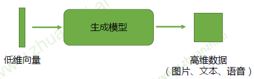
- 生成式对抗网络（GAN）的目的是训练这样一个生成模型，生成我们想要的数据
- GAN框架
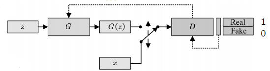
- 判别器(Discriminator)：区分真实(real)样本和虚假(fake)样本。对于真实样本，尽可能给
出高的评分1；对于虚假数据，尽可能给出低个评分0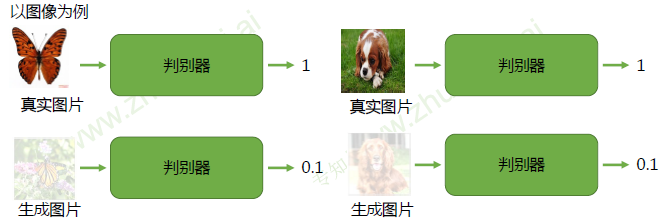
- 生成器(Generator)：欺骗判别器。生成虚假数据，使得判别器D能够尽可能给出高的评分1
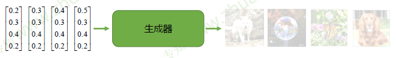
- 随机噪声z：从一个先验分布（人为定义，一般是均匀分布或者正态分布）中随机采样的向量（输入的向量维度越高，其生成图像的种类越多）
- 真实样本x：从数据库中采样的样本
- 合成样本G(z)：生成模型G输出的样本
- 目标函数：
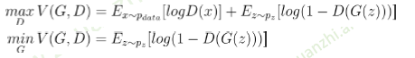
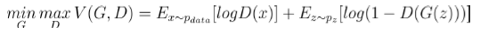
- 让真实样本的输出值尽可能大，同时让生成样本的输出值尽可能小
- 所以判别器D最大化的目标函数就是对于真实样本尽可能输出1，对于生成器的生成样本输出0
- 生成器G最小化目标函数就是让生成样本能够欺骗判别器，让其尽量输出1
- 训练算法
- 随机初始化生成器和判别器
- 交替训练判别器D 和生成器G，直到收敛
- 固定生成器G，训练判别器D区分真实图像与合成图像
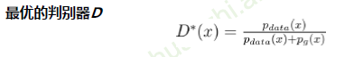
- 一个样本x来自真实分布和生成分布概率的相对比例
- 如果来自生成分布的概率为0（），那么就给出概率1，即确定该样本是真的
- 如果来自真实分布的概率为0（），那么就给出概率0，即确定该样本是假的
- 因为最优判别器的输出属于[0,1] ，所以判别器的输出用sigmoid激活
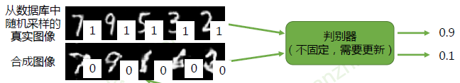
- 固定判别器D，训练生成器G欺骗判别器D
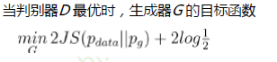
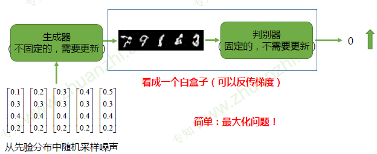
- KL散度：一种衡量两个概率分布的匹配程度的指标
- 当时，KL散度为零
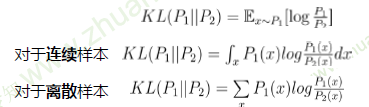
- 具有非负性，但存在不对称性（在优化的时候，会因为不对称性优化出不同的结果）
- 极大似然估计 等价于 最小化生成数据分布和真实分布的KL散度
- JS散度
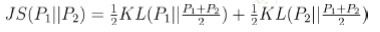
- 具有非负性，以及对称性
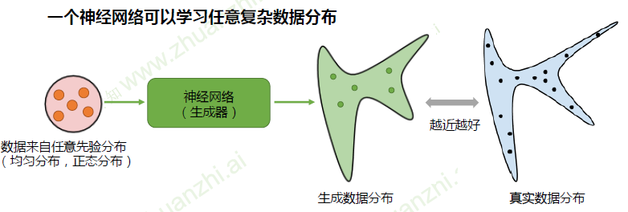
- 但存在问题：生成数据和真实数据分布的表达形式我们不知道，无法计算散度，也就没有目标函数，
无法优化生成器 - GAN：生成式对抗网络通过对抗训练，间接计算出散度(JS)，使得模型可以优化
- 最大化判别器损失，等价于计算合成数据分布和真实数据分布的JS散度
- 最小化生成器损失，等价于最小化JS散度（也就是优化生成模型）
- 但存在问题：生成数据和真实数据分布的表达形式我们不知道，无法计算散度，也就没有目标函数，
cGAN
Conditional GAN, 条件生成式对抗网络
- 网络结构
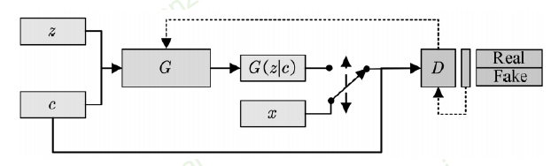
- 为了能够满足条件生成，所以需要添加一个class标签
- 对于生成器而言，没啥变化，只是增加了一个label输入
- 对于判别器而言，输入为图片以及对应标签；判别器不仅判断图片是否为真，同时也要判断时候和标签匹配
- 真实图片+正确label==》1
- 真实图片+错误label==》0
- 合成图片+任意label==》0
DCGAN
Deep Convlutional GAN, 深度卷积生成式对抗网络
- 原始GAN，使用全连接网络作为判别器和生成器
- 不利于建模图像信息
- 参数量大，需要大量的计算资源，难以优化
- DCGAN，使用卷积神经网络作为判别器和生成器
- 通过大量的工程实践，经验性地提出一系列的网络结构和优化策略，来有效的建模图像数据
- 判别器
- 通过Pooling下采样，Pooling是不可学习的，这可能造成GAN训练困难
- 使用滑动卷积（步长大于1），让其可以学习自己的下采样策略
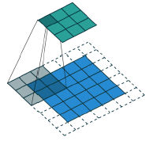
- 生成器：滑动反卷积
- 通过插值法上采样，插值方法是固定的，不可学习的，这可能给训练造成困难
- 使用滑动反卷积（进行扩展），让其可以学习自己的上采样策略
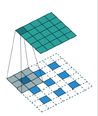
WGAN/WGAN-GP
Wasserstein GAN with Weight Clipping/ Gradient Penalty
-
原始GAN存在的问题
- 训练困难：生成器无法生成想要的数据
- 模式崩塌：生成器无法学习到完整的数据分布
-
JS散度
- 已知GAN网络的目标函数
- 所以可以看到GAN网络的训练效果是和JS散度相关联的
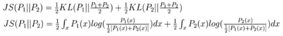
- 分析任意一个点x对JS散度的贡献：
- 当（即该数据既没有在真实数据中出现，也没有在生成数据中出现）
- ，对计算JS散度无贡献
- 当或
- 贡献等与常数，但梯度等于零
- 当
- 对计算JS散度有贡献且不为常熟，因此梯度不为零
- 当（即该数据既没有在真实数据中出现，也没有在生成数据中出现）
- 分析任意一个点x对JS散度的贡献：
- 但与发生不重叠（或重叠部分可忽略）的可能性非常大，即这种情况发生概率很小
- GAN：真实数据分布和生成数据分布是高维空间中的维度流形，它们重叠的区域可以忽略不记（能够提供梯度信息的数据可以忽略不记） == =》所以无论它们相距多少，其JS散度都是常数（仅当完全重合时，JS散度为零），导致生成器的梯度（近似）为零，造成梯度消失===》GAN优化困难
- 已知GAN网络的目标函数
-
Wasserstein距离
-
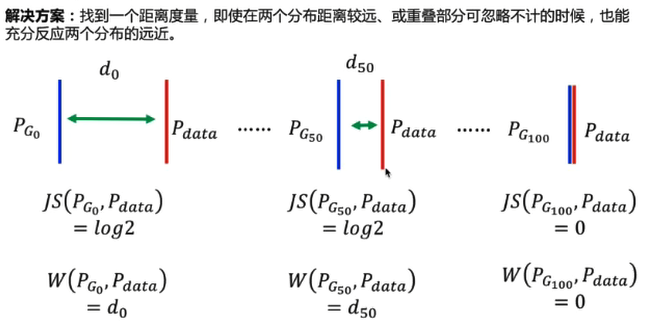
-
-
：P1和P2组合起来的所有可能的联合分布的集合
-
：样本x和y的距离
-
inf：所有可能的下界
-
假设对于P1和P2上的点x，y有一个联合分布γ；在这个联合分布上取一对点(x,y)，计算他们的距离，然后通过很多的点，计算出它的期望；然后我们再遍历所有可能的联合分布，得到一个最小的距离，就是我们定义的W距离。
-
e.g
-
假设有两个离散的分布，每个分布只包含两个点（A、B和C、D），每个点的出现概率相等，横竖距离均为1
-
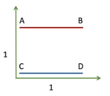
-
通过这个分布，可以计算出距离
-
距离 C D A 1 B 1
-
-
下面讨论所有可能出现的联合分布形式，下面仅举例其中可能的两种
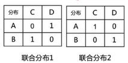
- 在联合分布1下，可以计算出期望
- 同理，在联合分布2下，计算得出期望为2（可以得到是所有可能的联合分布中最小的期望值）
-
所以得到W距离为2
-
-
可以理解为：将分布P1移动到分布P2，已知彼此距离，选择一个合适的移动方案γ（联合分布），让走的路径最小，就是W距离。
- 在最优的路径规划γ下，把土堆从P1移动到P2所需的路径（最短距离消耗）
-
但inf（穷举所有可能，取下界）项无法直接求解
-
-
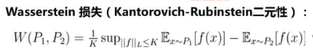
- 为了解决其中李普希思系数存在的限制，使用了权重截断的方法
- 权重截断：在每次优化判别器D之后，把D的权重的绝对值限制在某个范围
-
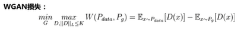
-
-
WGAN-GP
- WGAN存在的问题
- 权重二值化：WGAN几乎所有参数都是正负0.01，浪费神经网络的拟合能力（权重截断）
- 梯度衰减、爆炸（权重截断的截断阈值）
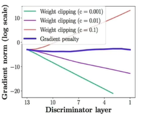
- WGAN-GP：把Lipschitz限制作为一个正则项加到Wasserstein损失上，在优化GAN损失的同时，尽可能满足Lipschitz限制
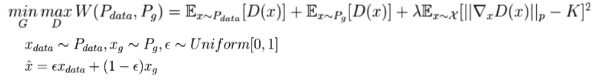
- WGAN存在的问题
Progressive GAN
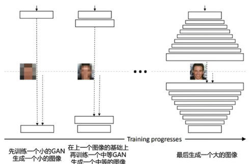
SN-GAN
谱归一化层实现利普希茨连续
- WGAN：权重截断–> 权重二值化、梯度消失/爆炸
- WGAN-GP：惩罚项–> 收敛速度仍然慢于DCGAN
- SN-GAN：每层权重除以该层矩阵谱范数即可满足利普希茨连续
Self-Attention GAN
建模长距离依赖关系
- 原始GAN存在的问题
- 局部效果很逼真，全局效果不逼真
- 引入自注意力机制
- 建立一个长距离依赖关系
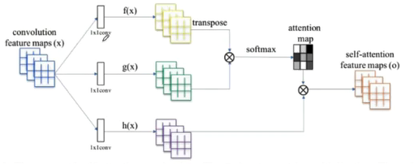
- 让最终的输出每一部分不仅仅是和对应的感受野相关，也和整体全局相关联
BigGAN
- 增大Batch Size
- 噪声不单单加在输入层，还加在中间层
- 截断技巧
- 在一个分布中采样噪声，如果噪声超过阈值，则丢弃再次采样
- 阈值越大，图片多样性越好，但图片质量会略微下降
- 阈值越小，图片多样性越差，但图像质量更好
实战项目-基础
- 图像翻译
- 学习图像到图像的映射
- 黑白图像–>彩色图像：学习彩色图像的条件分布
- 学习图像到图像的映射
- U-NET
- 神经网络中，浅层卷积核提取Low-Level特征，深层卷积核提取High-Level特征
- High-Level特征：分类、检测需要对图像深层理解等任务
- Low-Level特征：保留更多图像细节
- 图像翻译任务：需要Low-Level和High-Level 特征
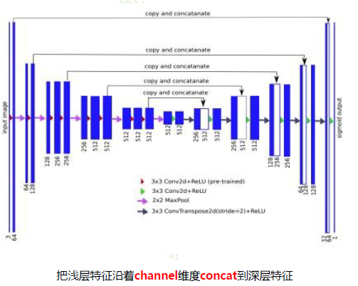
- ResGenerator
- 在残差网络中，通过残差的形式，不断向后传递
- 同时还解决了退化的问题
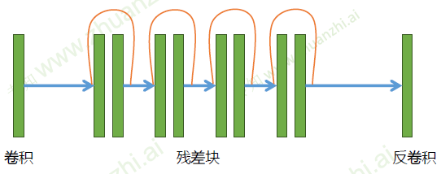
Pixel2Pixel
用cGAN实现图像翻译
- 已知我们有一一对应的数据集（例如：轮廓<–>建筑）
- 使用cGAN
- 首先输入轮廓和随机噪声，通过生成器生成建筑图像，再将输入和建筑图像输入到判别其中
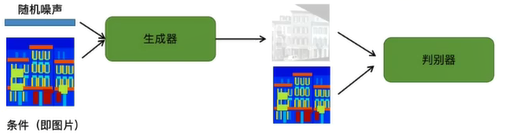
- 判别器进行判断，输出判别值
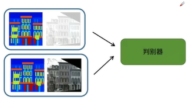
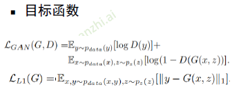
深度学习三要素
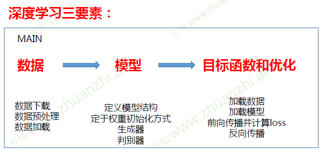
CycleGAN
无须paired数据，学习图像翻译
- 有两组数组，但彼此之间并不是一一对应
- 因为没有很好的全局损失信息，可能会出现生成的结果不能保持对应的位置信息等
- eg
- CycleGAN中，首先将斑马生成马，然后再将马重新返回生成斑马，然后比对原始斑马和生成的斑马的损失，即可以保存一定的位置等信息
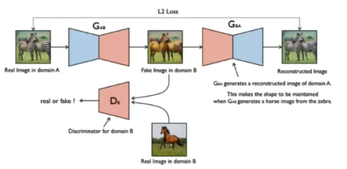
- 循环一致性损失
- ·对于输入图像：将生成图像重建回输入图像，应当让原始输入图像和重建的输入图像尽可能相似
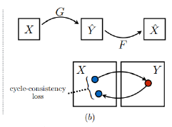
- 同理，有
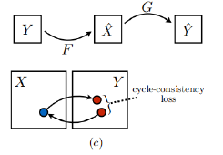
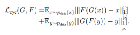
StarGAN
一个GAN，多种数据，任意变换
- 与GAN相比，其输入多了一个Target domain，输出多了一个Domain classification，用来分类表情的种类
- 于此同时还增加了一个循环一致性损失
- 对于生成器生成的Fake image，和期望表情的标签一起返回给生成器，让其尽可能地再次还原出原始的输入图像
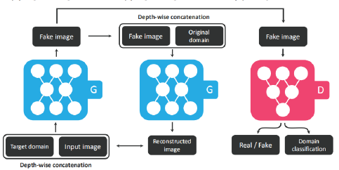